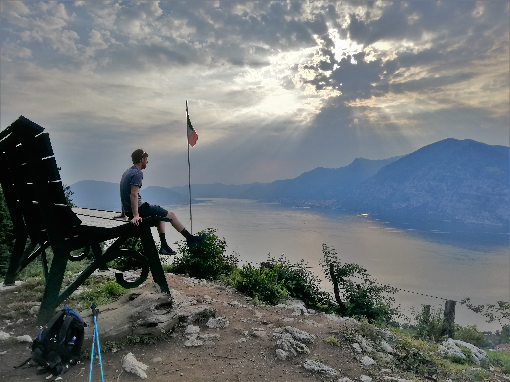

Luca Barile

Studies & Work
Free time & Hobbies
- Sports and outdoor fan(atic) 🏀🎾🏓🧗🏔️🚵🎱🎯♟️🏊🏻🤹⛷️🏃🏼 ...
I like to have an active lifestyle, travelling and meeting people ✈️🌍🆙
If you want some more details about my adventures you can follow me on my instagram page 📸
- Cybersecurity enthusiast 💻☠️
Sometimes I like to study and learn about cybersecurity related topics in my free time and I do it by reading blogs from other cybersecurity enthusiasts and researchers, or looking for interesting information on various websites. By doing this I'm learning fast (and a lot) about these topics and for this reason I've decided to start my personal blog, to give back something that I hope will, in turn, be useful for all the enthusiasts and, more generally, for the whole community.
- Occasionally I develop some utilities and various types of software. You can find here my programs and their source code 👨🏼💻